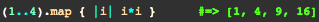

They really aren't though.
Before we start, I gotta admit: 1) the method is actually map and not maps, and 2) I don't know why its called map instead of something else like transform or change. I guess you could say that with the Enumerable#map method, you're essentially "mapping out directions." End of bad joke.
But really, let's actually try to stretch out this map analogy a little bit shall we? When you're Googling for directions to some place, you're basically asking, "What steps do I take to get from A to B?" With the Enumerable#map method, you're basically acting as Google Maps here by providing your program with steps to get from A (you're receiver object) to B (your output). I think I'm trying too hard with this map analogy, so I'm gonna stop.
Anyways, take a look at this example below:
In the example, the code is essentially saying, "do this to the current element." So by having "i*i" in the block, we're saying, multiply the current element by itself. The good thing about map, is that we actually end up returning a new array (yeeee for non-destructive!). The map method also allows you to "replace" the elements of a string in a sense, too, in that you could have done something like replace "i*i" with "no longer an integer," which would have returned an array with strings equal to "no longer an integer."
It gets kind of tricky, but don't over think it, just know that if you think out of the box a bit, you can actually make great use out of the map method. In the words of Albert Einstein:
Logic will get you from A to B. Imaginationg will take you everywhere.
Well, with coding, you kind of need both, but hopefully you get the point.